TLDR; Кошторис та гарантійні умови компонент DIY PC на X299.
Виникла ідея побудувати комп'ютер для тестування одночасної роботи до восьми NVMe дисків для SaaS або Edge Office конфігурації МІА: Документообіг. Для такої кількості зовнішніх пристроїв підходять тільки декілька платформ де використовуються процесори з достатньою кількістю PCIe ліній: X299, C261, TRX40, що було описано в попередніх випусках. В цій статті ми вибрали саму дешеву з перелічених платформу X299. Крім того ці платформи це єдиний спосіб отримати більше ніж 64ГБ оперативної пам'яті. У даному випадку 128ГБ, яка буде використовуватися як дисковий кеш RocksDB. Таким чином замість Triple-SLI ми забиваємо всі доступні PCIe лінії дисками.
Крім того конвертація DOCX в PDF та накладання КЕП на першу сторінку PDF це функції які найгірше масштабуються, тому велика кількість дисків та велика кількість ядер може компенсувати цю проблему для SaaS конфігурації. Це тестовий стенд повинен дати відповіді на ці питання. Передбачається групування баз даних організацій по фізичним NVMe дискам.
Традиційно, як і в проекті Трістеллар, був вибраний корпус з роздільними секціями для десяти SATA дисків, для побудови NAS, окремим відсіком для відеокарти, і окремим відсіком для блока живлення, що, навіть при збільшенні розмірів, виправдовує таке розміщення з точки зору охолодження, обслуговування та прибирання.
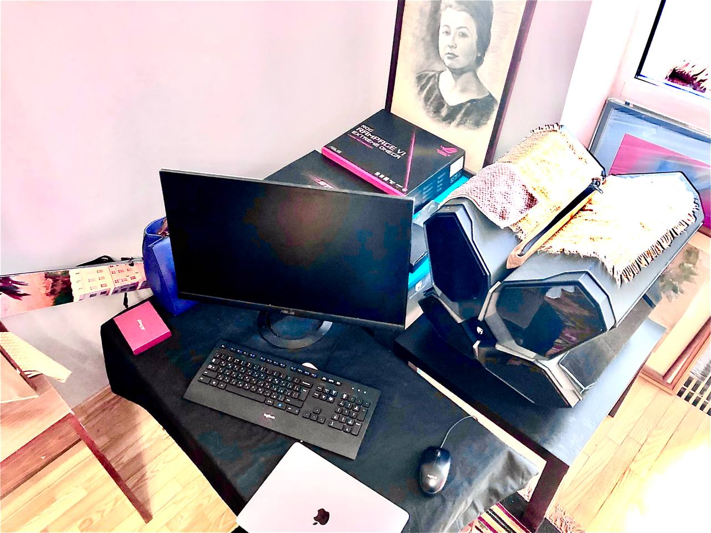 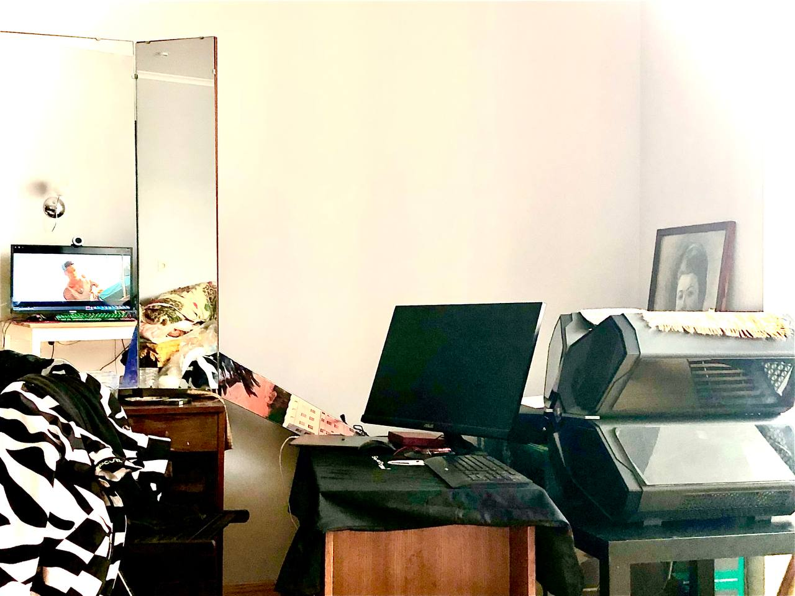Ми використовуємо стенд без декоративних паналей заради максимального розсіювання тепла, для цих процесорів такі відкриті режими шасі виправдані.
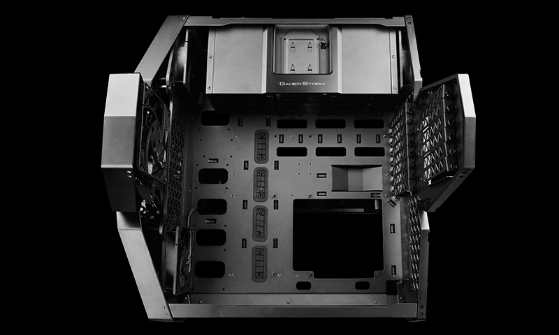Тривалість гарантійного терміну на блоки живлення Seasonic Prime TX-1000 складає 12 років. Ціна — $500.
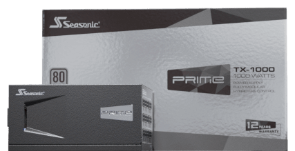Для кожної платформи ми купуємо два процесори: один найнижчої і один найвищої категорії. У даному випадку два HEDT-процесори Core-X для LGA2066: i7-7820X та i9-10980XE. Ресурс процесорів більший ніж ресурс його актуальності. Ціна молодшого (на 28 ліній) $250 і старшого (на 48 ліній) $1000.
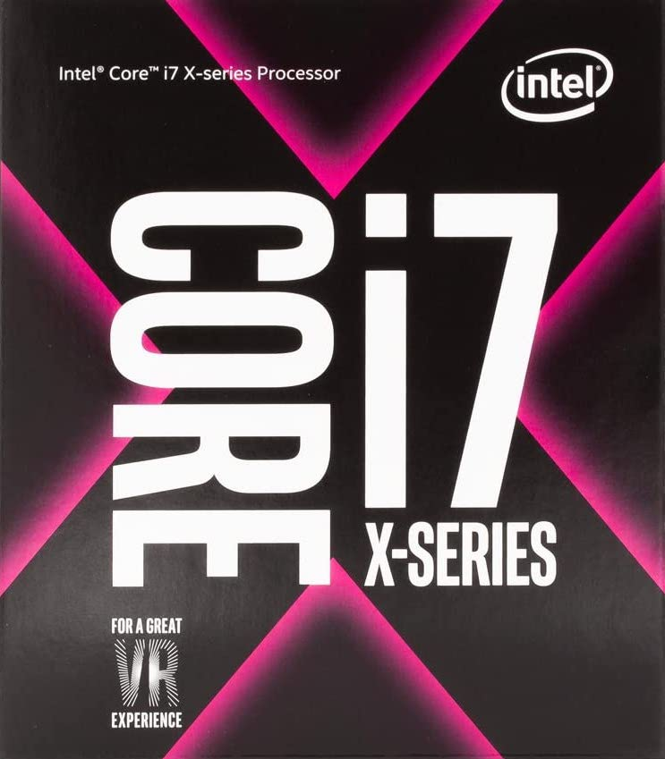 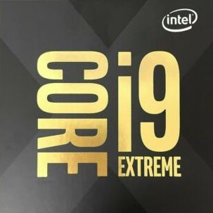Для використання 4-канальної памʼяті у найефективнішому режимі потрібно забити усі вільні слоти на материнській платі, це на вибір 64ГБ, 128ГБ, 256ГБ. Ми вибрали 3600МГц G.SKILL CL17 8x16GB кіт 128GTZR. Модулі пам'яті мають обмежену пожиттєву гарантію. Ціна комплекту $800. Переконалися, що памʼять пройшла випробування та офіційно підтримується виробником материнської плати.
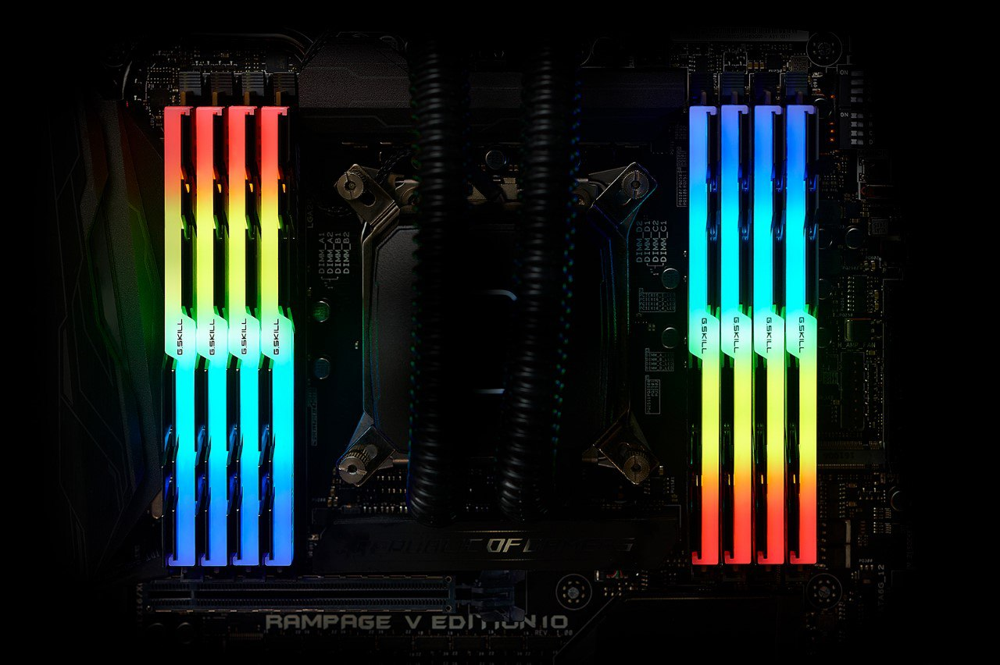Корпус Квадстелар диктує використання тільки СВО. Для потужних процесорів максимальна трьохсекційна система ASUS STRIX LC 360 RGB GUNDAM EDITION. СВО як і в Трістелар білого кольору. Ресурс системи охолодження 3 роки. Ціна комплекту $250.
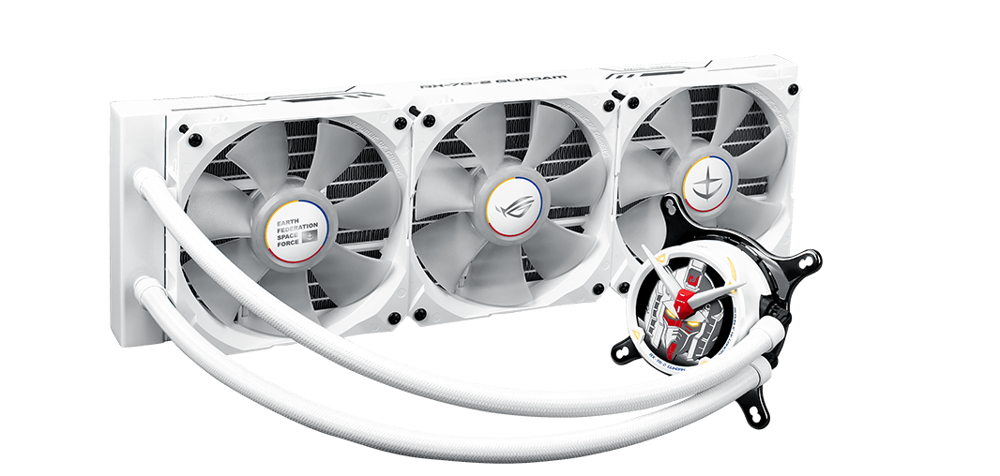В ASUS є багато плат для X299 але нас цікавили тільки STRIX X299-E та RAMPAGE VI EXTREME OMEGA, була вибрана остання. Ресурс материнської плати може сягати 20 років. Гарантійна підтримка 7 років. Ціна плати RAMPAGE $800, STRIX — $300. Гарантія на RAMPAGE діє до середини липня 2023 року у той час як клієнтська платформа скайлейків Z370 вже перестала підтримуватися.
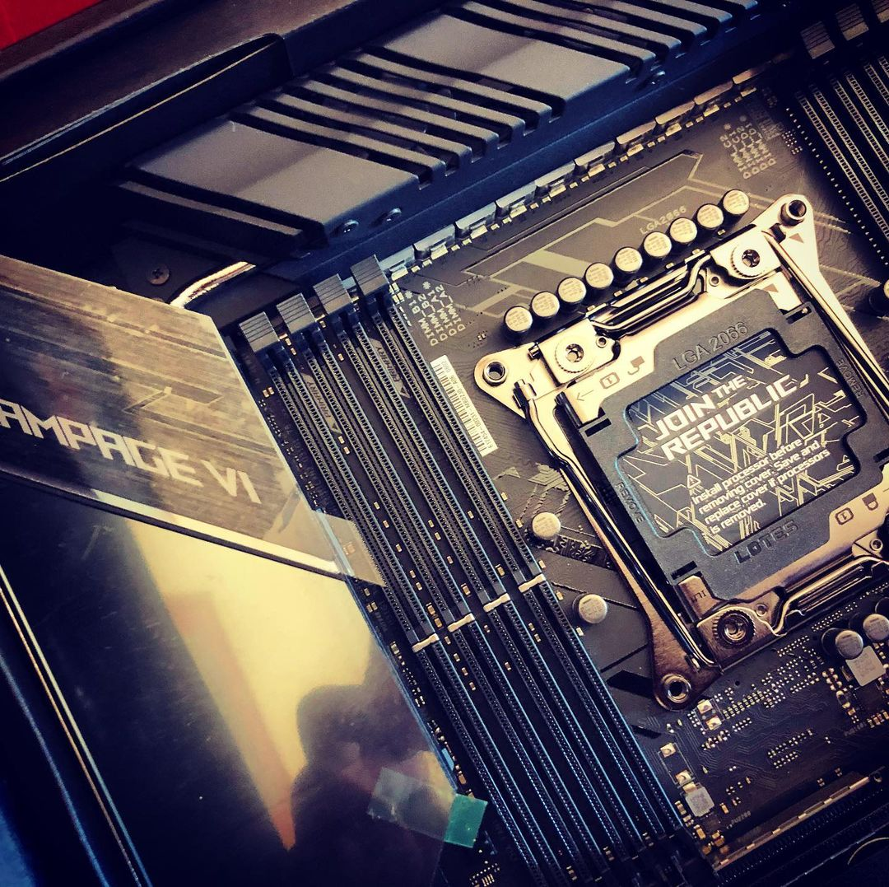 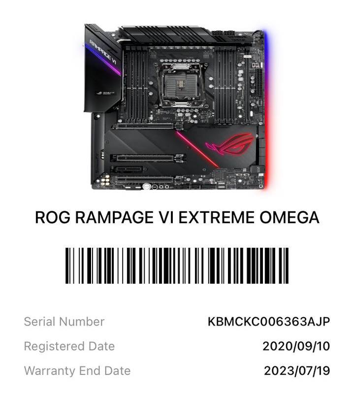У якості дискової системи використовується два PCIe 3.0 адаптера, кожен на 4 NVMe диски. Це вісім Samsung 970 EVO+. Ресурс таких дисків 600 записаних терабайт даних. У PRO (MLC) версії — 1200 терабайт. Ціна 970 EVO+ 1TB — $150.
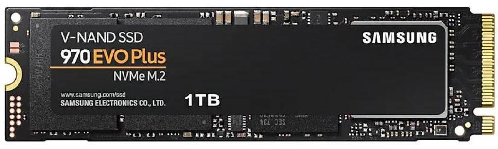Так як скайлейки SKL-X, CLS-X не містять відеоадаптеру потрібно вибрати карту яка займає мінімальну кількість PCIe ліній. У нашому випадку це GT 1030 PCIe 3.0 4x за $100. Такі плати живуть довго.
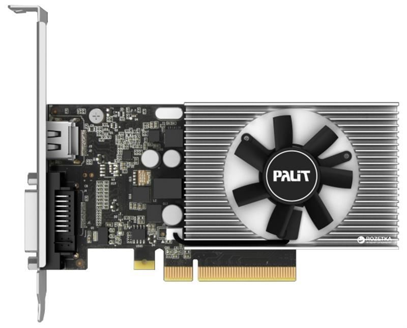Нова історія процесорів Intel після скайлейків починається з платформи LGA4189 для процесорів платформи Ice Lake та Cooper Lake. Їхній бекпорт в старий 14++ нм техпроцес який називається Rocket Lake (як наприклад i9-11900K) доступний для платформи LGA1200, та Alder Lake для платформи LGA1700. Все ще очікується Sapphire Rapids для LGA4766.
Таким чином ми закриваємо сторінку історії скайлейків зібравши чотири процесори одразу у двох сигментах Desktop Client (Coffee Lake, Z370, Z390) та HEDT (Basin Falls, X299). Надзвичайно дорогі та ексклюзивні платформи LGA3647 (Purley, C621), LGA4189 (Lewisburg, C621A) не дозволяють гнучко будувати конфігурації.
| Nm | Arch | Gen | Code | Segments | Core |
|---|---|---|---|---|---|
| 10 | Comet Lake | 10 | CML | U,H,S | Skylake |
| 10 | Ice Lake | 10 | ICL | Y,U,H,X,W,SP | Sunny Cove |
| 14++ | Cooper Lake | 10 | CPL | X,W,SP | Sunny Cove |
| 14++ | Rocket Lake | 11 | RKL | S | Sunny Cove |
| 10+ | Tiger Lake | 11 | TGL | U,H | Willow Cove |
| 10+ | Alder Lake | 12 | ADL | U,S,H,P | Golden Cove |
| 10+ | Sapphire Rapids | 12 | SPR | SP,X,W | Golden Cove |
Тим хто хоче використовувати процесори Intel Core покоління вже сьогодні пропоную починати відразу з LGA1700 (Alder Lake, Z690) які показують порівняну потужність в іграх та інших GPU застосуваннях за одиницю ціни. Я ж буду очікувати на майбутню платформу Xeon Workstation з сокетом LGA4766 під кодовою назвою Sapphire Rapids на чіпсеті W790.
Максим Сохацький